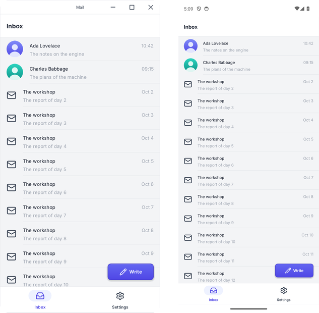
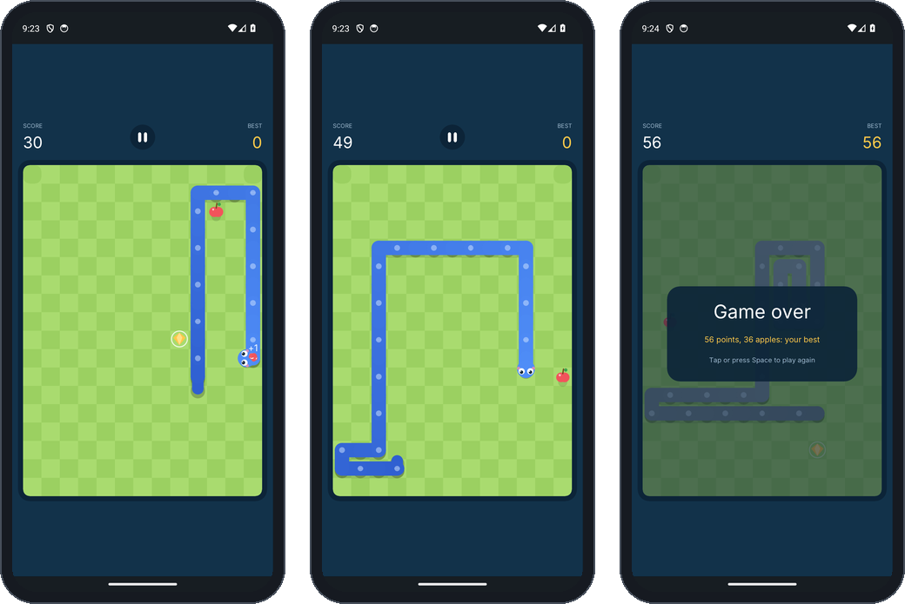

Native code, familiar syntax, no pointers.
Cromo is a compiled language with the syntax of C and C++, RAII and ownership checked by the compiler, and no garbage collector. One command, cromo, compiles and links your program. It brings together the best ideas of C++, Rust and Go, with rules that stay simple.
- Kind
- compiled to native code, statically typed
- Memory
- ownership and RAII · no pointers, no garbage collector
- Backend
- LLVM 23 and LLD, inside
cromo - Targets
- Windows x64 · Linux x64 · Linux ARM64 · Android
- Hello world
- 32 KB · statically linked, no libc
- Needs
- nothing else · no SDK, no Visual Studio
- Library
- tasks, HTTP, TLS, JSON, databases, windows
- Written in
- Cromo · it compiles itself since 0.98
- Decisions
- 580 · each written down with its reason
- License
- MIT or Apache 2.0
import std.time
// RAII: the destructor runs when the timer leaves its scope.
struct Timer {
string name
time.Instant start
Timer(move string label) {
name = move label
start = time.now()
}
~Timer() {
println("{}: {} µs", name, start.elapsed().microseconds())
}
}
i32 main() {
Timer timer = Timer("sum")
map<bool, i64> parity
for (i64 n = 0; n < 1000; n++) {
parity[n & 1 == 0] += n
}
println("even {}, odd {}", parity[true], parity[false])
ret 0
}$ cromo run timer.cro even 249500, odd 250000 sum: 120 µs
The control of C++, without its traps
Cromo keeps what C and C++ programmers already know — braces, value types, destructors — and leaves out pointers, undefined behavior and the borrow checker's lifetimes.
Ownership you can read
ref lends, move gives away, copy() duplicates. No lifetimes to annotate: the compiler follows every path.
RAII, always
Destructors run at the end of every scope, on ret and break, and while an exception unwinds.
LLVM inside
Cromo emits LLVM IR and optimizes it with a pinned LLVM. Overflow is a panic in debug builds and wraps around in --release.
No SDK, no libc
cromo carries LLVM and the LLD linker; the runtime and the library come with it. No Visual Studio, no libc: programs start in kilobytes.
Windows, Linux and Android
From either system, --target builds for windows, linux, linux-arm64 or android, which writes the signed APK of an app. A module can add fs_windows.cro and fs_linux.cro next to fs.cro.
Generics and interfaces
Generics compiled once for each type, constrained by interfaces. Dynamic calls only through interface parameters. No inheritance.
Exceptions that clean up
try, catch and finally, with every live object destroyed on the way out. Bugs are panics, not exceptions.
Tooling included
cromo fmt has one style and no options. cromo lsp gives VS Code errors as you type, hover with the documentation, definitions, completion and signature help.
The compiler explains the rules
Strings, lists and maps own memory: = copies them, as in C++, and move hands them over for free. When a value is used after a move, or cannot be copied, the error says how to fix it — and names the design decision behind the rule.
- readThe default for parameters: borrowed and read-only, never copied.
- refThe function can modify the caller's value. Two
refto the same place are an error. - moveThe function becomes the owner; the caller can no longer use the value.
void keep(move string text) {
println("kept {}", text)
}
i32 main() {
string name = "Ada"
string other = name // a copy
keep(move name)
println("{}", name)
ret 0
}$ cromo build own.cro own.cro:9:19: error: 'name' has been moved and can no longer be used (D23) println("{}", name) ^
One program, desktop and phone
std.gui draws its windows and components itself, inside the program: the same look on Windows and on Linux, light or dark. Compiled with --target android, the same program is an app.
- std.guiButtons, text boxes, lists that scroll, dialogs, app bars and the icons of Lucide, with anchors that fit them to every size.
- android
cromo build --target androidwrites and signs the APK by itself, with no Android SDK and no Java;cromo run --target androidstarts it on the phone. - embed
embed("logo.png")puts a file inside the program, so an app carries its images.

2D games, desktop and Android
A game is a window with a canvas. The same source plays in a window with the keyboard and on a phone with a finger, and cromo run --target android puts it there with one command. There is no garbage collector to stop a frame.
- frames
w.onUpdatecalls the game at each frame, with the seconds since the one before: what moves goes as fast on every device. - inputThe keys pressed and released, the mouse, and each finger on the screen with its number, for swipes and for more fingers together.
- sound
std.audioplays effects from WAV and music from Ogg Vorbis, as many together as the game starts, from files thatembedputs in the program.

This is examples/25_snake.cro: about 600 lines, with its drawing, its sounds and its music, and nothing else to install.
One line, and it is there
A package is a Git repository, named by its address, with its tags as versions: there is no registry to ask. cromo get adds one to the project, and cromo build downloads what is missing, checks it by its hash and builds. A package can bring a library written in C or C++: cromo takes the one of the system from where its authors publish it, and puts it next to the executable.
$ cromo get github.com/cromolang/duckdb duckdb: github.com/cromolang/duckdb v0.1.0
- onnxRun models in the ONNX format, with ONNX Runtime: neural networks inside the program, with no Python.
- duckdbDuckDB, the database for analysis: millions of rows, CSV and Parquet files, with SQL and the names of
std.db. - pdfiumPDF documents, with the engine of Chrome: their text, and each page as a picture.
- tomlTOML, read into a struct of the program. Written in Cromo.
- redisA client of Redis. Written in Cromo, on
std.net. - s3A client of S3, for AWS and the stores that speak its protocol: buckets, objects, large files in parts, addresses to share. Written in Cromo, on
std.http. - sshA client of SSH and of SFTP: commands, a shell and the files of a server. Written in Cromo, on
std.netandstd.crypto.
The packages with a library are for Windows and Linux on x86-64. How packages work, and how to write one.
Read it once, know what it does
Every example on this page compiles with the current version of cromo. Statements end at the end of the line; types come before names; ret returns.
interface Shape {
f64 area() const
}
struct Circle : Shape {
f64 radius
f64 area() const {
ret 3.14159 * radius * radius
}
}
// Compiled once for each type: no boxing, no virtual calls.
f64 total<T : Shape>(list<T> shapes) {
f64 sum = 0.0
for (T shape in shapes) {
sum += shape.area()
}
ret sum
}
i32 main() {
list<Circle> circles
for (i32 i = 1; i <= 3; i++) {
Circle c
c.radius = f64(i)
circles.add(c)
}
println("{:.2f}", total(circles))
ret 0
}$ cromo run generics.cro 43.98
// A lambda captures by value, with ref or with move.
list<i64> select(list<i64> values, func(i64) bool test) {
list<i64> result
for (i64 v in values) {
if (test(v)) {
result.add(v)
}
}
ret result
}
i32 main() {
list<i64> values
for (i64 i = 1; i <= 10; i++) {
values.add(i)
}
i64 limit = 7
i64 sum = 0
list<i64> big = select(values, [limit](i64 x) bool { ret x > limit })
select(values, [ref sum](i64 x) bool {
sum += x
ret false
})
println("{} above {}, sum {}", big.len(), limit, sum)
ret 0
}$ cromo run lambdas.cro 3 above 7, sum 55
i32 main() {
map<string, i32> stock
stock["apples"] = 12
stock["pears"] += 3 // a missing key starts from 0
i32[7] week // a fixed-size array, where it is declared
week[0] = stock["apples"]
for (string item, i32 count in stock) {
println("{:<8}{:>4}", item, count)
}
string report = format("{} items, monday {}", stock.len(), week[0])
println("{}", report)
ret 0
}$ cromo run collections.cro apples 12 pears 3 2 items, monday 12
import std.fs
struct Config {
string path
i32 port
}
Config load(string path) {
Config config
config.path = path.copy()
config.port = i32(fs.readText(path))
ret config
}
i32 main() {
try {
Config config = load("port.txt")
println("listening on {}", config.port)
} catch (Exception e) {
eprintln("cannot start: {}", e.message())
ret 1
} finally {
println("bye")
}
ret 0
}$ cromo run errors.cro cannot start: cannot read 'port.txt': no such file or folder bye
import unsafe
extern "user32" {
i32 MessageBoxA(addr window, addr text, addr title, u32 kind)
}
i32 main() {
addr none
string text = "Hello from Cromo"
MessageBoxA(none, text.cstring(), "cromo".cstring(), 0)
ret 0
}$ cromo run c_interop.cro # a message box opens; user32.dll was checked for MessageBoxA at compile time
One command for everything
Build, run, format and edit with the same executable. No build system to configure: a folder with main.cro is a program.
$ cromo run hello.cro Hello, world! $ cromo build # main.cro of the folder $ cromo build --release # optimized $ cromo build --target linux # an ELF, from Windows $ cromo run --target android # the app, on the phone $ cromo update # the latest signed version $ cromo fmt . # one style, no options $ cromo lsp # for the editors $ cromo version cromo @VERSION@ (LLVM 23.1.4)
VS Code, from day one
The extension highlights the syntax and runs cromo lsp: errors while you type, the type and the documentation of every name on hover, go to definition, the members after a dot and the help on the arguments of a call, for your code and for the whole library.
As fast as C++, measured
Thirteen small programs — allocation, recursion, floating point, strings, hash maps, threads, tasks, a server of HTTP — written in Cromo, C++, Go and Rust, compiled with the usual optimizations and run on the same machine. Every version of cromo is measured against the previous ones and against the references.
Run time
Geometric mean, relative to g++ -O2. Lower is faster.
Compile time
Geometric mean, relative to g++ -O2.
Run time of each program, in milliseconds
The median of 5 runs; the fastest of each row is green. The means are of the eleven programs that every language has: http and tasks are against Go alone.
| benchmark | cromo 0.96 | g++ 14 | clang++ 18 | go 1.22 | rustc 1.96 |
|---|---|---|---|---|---|
| binarytrees | 954 | 899 | 880 | 1378 | 1520 |
| bits | 416 | 491 | 468 | 679 | 466 |
| collatz | 492 | 701 | 495 | 789 | 495 |
| fib | 564 | 344 | 478 | 1065 | 563 |
| http | 661 | – | – | 1875 | – |
| mandelbrot | 770 | 780 | 767 | 778 | 793 |
| shapes | 454 | 445 | 463 | 714 | 463 |
| sort | 496 | 539 | 549 | 573 | 452 |
| spectralnorm | 487 | 469 | 484 | 485 | 485 |
| strings | 319 | 426 | 419 | 634 | 445 |
| tasks | 490 | – | – | 301 | – |
| threads | 109 | 107 | 103 | 108 | 112 |
| wordcount | 503 | 1200 | 616 | 290 | 492 |
AMD Ryzen 9 5950X, Ubuntu 20.04 in WSL 2; cromo build --release --target linux, g++ -O2, clang++ -O2, go build, rustc -C opt-level=3. Each program prints a checksum, and all the versions must print the same. The sources and the script are in bench/.
What a program needs, already inside
The library comes with cromo, written in Cromo, with nothing to install and no C library under it on Linux: a backend, a tool for the command line or an app starts from here. Each module has its page in the guide, made from the comments of its source.
The modules 29 and the core
- coreAlways there, without an import:
string,list<T>,map<K, V>,Option<T>,printandformatchecked by the compiler,sort, numbers from text, the functions of the bits, the vectors of SIMD,embedfor the files of a program - std.fsFiles read and written whole, in pieces or mapped in memory; folders, paths, links, permissions
- std.osThe system, the environment, the current folder, the standard input, whether the output is a terminal
- std.processOther programs, run to their end or alongside, with their input and output, without a shell
- std.cmdlineThe options of the command line, with their types, and the help written by itself
- std.timeA monotonic clock and a stopwatch, dates with time zones from the IANA database, formats to write and to read them, pauses
- std.logThe log of a service: levels, text with colors or JSON, the terminal, a file or both, fields that follow a request
- std.configNames with their values, in memory and in files of
name=valuelines that keep their comments - std.uuidThe UUIDs of RFC 9562: random, ordered by time, from a name; read, written and compared
- std.threadThreads, lightweight tasks under the same names, groups, mutexes that hold their data, atomics, channels
- std.netTCP, UDP and TLS for clients and servers, the names of DNS, and
ping, without the C library on Linux - std.ntpHow far the clock is from a server of NTP: the offset, the delay, the stratum and where its time comes from
- std.httpA server with routes and a task for each connection; a client with redirects, gzip, kept connections and timeouts
- std.websocketWebSocket for servers and clients: messages of text and of bytes, in both directions
- std.oauthOAuth 2.0 and OpenID Connect: the login with Microsoft, Google, Keycloak or any provider, with PKCE; the tokens of a service; the check of the tokens of an API
- std.otpThe one-time codes of the authenticator apps, TOTP and HOTP: the second factor of a login
- std.smtpEmail sent through a server of SMTP, with STARTTLS or TLS and a login by password or by a token of OAuth: text, HTML and attachments
- std.jwtJSON Web Tokens signed with HMAC, RSA, ECDSA or Ed25519, and the keys that a provider publishes
- std.cryptoSHA-1, SHA-2 and MD5, HMAC, random bytes, hex and base64; AES-GCM and ChaCha20-Poly1305; Ed25519, X25519, RSA and ECDSA
- std.jsonJSON to and from the structs of a program, with the conversion written by the compiler; values of any shape
- std.xmlXML read into its elements and written, on one line or for a person
- std.csvCSV with the quotes of RFC 4180 and any separator, as rows or as a table with the names of its columns
- std.regexRegular expressions with the syntax of RE2: a search in linear time, groups, replacements
- std.gzipgzip and deflate, to compress and to decompress
- std.zipThe archives of zip, read and extracted, also above 4 GB
- std.tarThe archives of tar, read and extracted, with
std.gzipfor.tar.gz - std.dbSQLite inside the program, and a client of PostgreSQL with SCRAM and TLS, under the same names
- std.mathRoots, powers, logarithms and trigonometry, with the same numbers on every system
- std.guiWindows and apps for Windows, Linux and Android from one source: components, tables of millions of rows, rich text, a canvas, SVG, dialogs, menus, the camera and the sensors
- std.audioSounds and music for games and apps, from WAV and Ogg Vorbis
How it was built
- decidedEvery choice is decided first and written down with its reasons, then implemented, with tests on Windows and Linux
- M0 – M98Ninety-nine milestones, all done; since version 0.98 the compiler is written in Cromo, and compiles itself
Next
- macOSPrograms for macOS, on Apple Silicon and Intel
- designerThe properties of each kind of component, and of several together
- packagesMore of them: models of language with llama.cpp, plugins with WebAssembly, video
Hello, world
Cromo installs with one line, for your user and without administrator rights: cromo, the library and the VS Code extension, in ~/.cromo. Then the Cromo Guide takes you from the first program to a web service.
# Windows, in PowerShell > irm https://cromolang.org/install.ps1 | iex # Linux $ curl -sSf https://cromolang.org/install.sh | sh
i32 main() {
println("Hello, world!")
ret 0
}win_x86_64-@VERSION@.zipdownload
Linux x64 · linux_x86_64-@VERSION@.tar.gzdownload
All downloads · checksums, signatures, installing by handopen
The Cromo Guide · also as PDF, in English and Italianread
What is safe, and what is not · the guarantees, their limits and their priceread
Source · compiler, library, specification and decisionsGitHub
Contributing · criticism, reports and code are welcomeGitHub